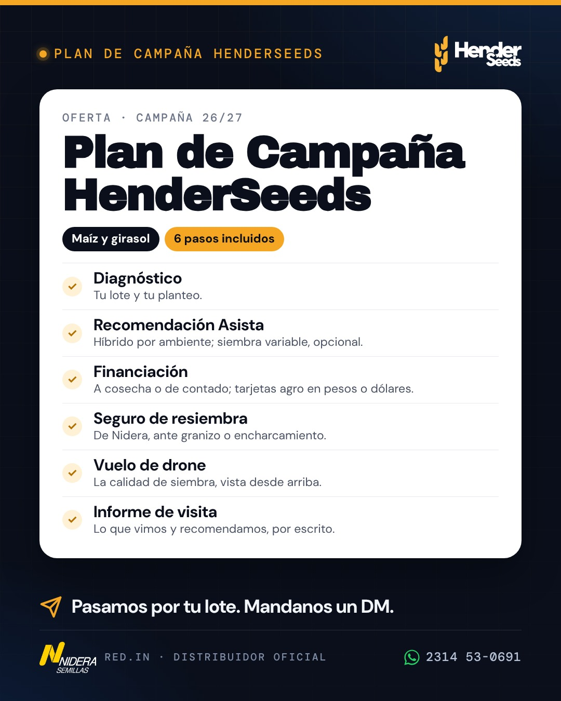
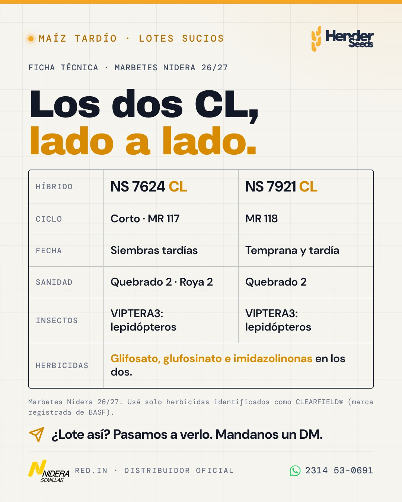

Nueve semanas.
Foco en el tardío.
El plan hasta el cierre del maíz tardío. Cada semana tiene lo comercial primero (contactos uno a uno) y una publicación lista para subir: no hay que diseñar nada. Alvaro publica y Santi revisa antes. El girasol se trabaja uno a uno porque queda poca semilla.
Tres cosas para arrancar el miércoles
- Girasol: mandá el mensaje de "queda poca semilla" a los clientes que siembran girasol, de a uno. Texto listo.Alvaro · 15 minutos
- Instagram: cambiá nombre, bio y links, y archivá los posteos viejos. Todo listo para copiar.Alvaro · 20 minutos
- Tardío: con Santi, anotá los primeros 20 productores que siembran tardío (clientes y prospectos) en la planilla del mapa de cuentas.Alvaro y Santi · 30 minutos
Lo comercial primero. Una publicación por semana.
Tildá lo que se va haciendo: queda guardado en este celular o compu. El lunes se mira qué toca; el viernes, si salió.
- Girasol: mensaje uno a uno a los clientes de girasol.Alvaro
- Lista de tardío: los primeros 20 nombres en la planilla.Alvaro y Santi
- Acordar con Santi el momento fijo de los lunes para revisar y publicar (decidido: Alvaro publica, Santi revisa antes con la checklist).Alvaro y Santi · 10 minutos
- Instagram: nombre, bio, links y archivo.Alvaro
- Perfil de Google Maps: reclamarlo o crearlo y completarlo.Santi
- Programar en Meta Business Suite las publicaciones del 12/10, 19/10, 22/10 y 26/10.Alvaro programa y Santi revisa · 40 minutos, una sola vez
Ninguna esta semana: primero el perfil.
- lun 12/10, 8–10 h · Somos de acá (placa en el feed, reel fijado). VerOpcional: dom 18/10, Día de la Madre (ver), sin pauta.
- Tardío, ronda 1: 10 productores A con sus números (calculadora en mano). MensajeAlvaro
- Ensayo (siembra cerca del 17/10): fotos con el celular de la siembra, la bolsa y el lote, para Estados.Alvaro
- Prender la campaña A (alcance en la zona) con el reel "Somos de acá". CómoAlvaro · $2.500 por día
- lun 19/10, 20–22 h · Reel "Maíz para diciembre: NS 7925". VerMismo día, en historias: encuesta "¿Ya definiste el maíz para el tardío?" (ver). A los que respondan "Todavía no", escribiles.
- jue 22/10, 8–10 h · "Tu campaña, con un plan" (Plan de Campaña, nueva). VerLa oferta sale antes de las rondas fuertes del tardío: el productor la ve en el feed y el vendedor la lleva impresa. También como Estado de WhatsApp (versión 9:16).
- Tardío, ronda 2: 10 productores A más.Alvaro
- Pedir reseña en Google a 10 clientes contentos. MensajeAlvaro o Santi
- Prender la campaña B (tardío, botón de WhatsApp) con este reel. CómoAlvaro · $4.000 por día hasta el 05/12
- lun 26/10, 20–22 h · "¿Maíz o girasol en ese lote?" (calculadora). VerMismo día, la historia animada con el link a la calculadora.
- Mapa de cuentas v1 completo: todos los clientes y 50 prospectos.Santi con Alvaro · 31/10
- Tardío, ronda 3.Alvaro
- Cargar el tablero de octubre y programar las publicaciones del 02/11, 09/11 y 16/11.Santi
- lun 02/11 · primera reunión mensual con el tablero: metas de la 27/28. AgendaTodos · 1 hora
- lun 02/11, 20–22 h · "Tardío con malezas: los dos Clearfield" (nueva). Ver
- Tardío, productores B: mensaje por WhatsApp.Alvaro
- Llamar al referente de Nidera: pedir por escrito el apoyo RED.IN para la 27/28 (jornada, carteles, material).Alvaro
- Campaña B: sumar la placa de los Clearfield (v2 · Etiquetas, J) como segundo anuncio.Alvaro
- lun 09/11, 8–10 h · Plan de Campaña, segunda vuelta con otra placa (recomendada: v2 · Informe, K crema, en piezas). VerMismo texto. Repetir la oferta con otra imagen la refuerza sin cansar. Opcional: mar 10/11, Día de la Tradición en historia (ver).
- En cada cierre de tardío, pedir un referido. Cómo pedirloAlvaro
- Girasol: el 15/11 cierra la fecha óptima en la zona. Último aviso a los clientes que no compraron.Alvaro
- Mirar qué hacen El Paye y Tierras de Henderson: qué venden, cómo atienden y qué publican.Santi · 30 minutos
- lun 16/11, 20–22 h · "El número que tenés que saber antes de sembrar" (rinde de indiferencia). Ver
- Llamar a los productores A que todavía no definieron el tardío.Alvaro
- Definir fecha y lugar de la jornada a campo en el ensayo (enero o febrero).Alvaro
- Programar las publicaciones del 23/11 y del 30/11.Santi
- lun 23/11, 12–14 h · "¿Financiar en pesos o en dólares?". Ver
- Tardío: última semana fuerte (el pico es hasta el 05/12).Alvaro
- Lista de invitados a la jornada: clientes, prospectos A y asesores.Alvaro y Santi
- lun 30/11, 20–22 h · Reel "¿Qué te queda de cada hectárea?" (calculadora). Ver
- Cerrar el tardío y anotar en Salesforce de dónde vino cada cliente nuevo.Alvaro y Santi
- Llamado de seguimiento a los clientes de maíz temprano: "¿cómo viene el maíz?".Alvaro
- Apagar la campaña B el 05/12. La A sigue, bajada a $3.300 por día (unos $100.000 por mes).Santi
Ocho piezas: seis de septiembre y dos nuevas.
Cada una trae el archivo para bajar y el texto para copiar. Sin precios y sin caras; el drone aparece solo dentro del Plan de Campaña.
Mostramos el híbrido y su tecnología. Por eso quedaron afuera el ranking del tardío, el carrusel del tardío y la placa del NS 7765, y sumé dos piezas nuevas sin números. En girasol la regla no aplica.
- ¿Es la pieza y el texto que tocan esta semana?
- ¿Cero precios, porcentajes o condiciones comerciales?
- Si es de maíz: ¿sin números de ensayo?
- ¿El texto se lee bien, con voseo y 8 hashtags como máximo?
- ¿El WhatsApp y el link de la bio funcionan?
- ¿La imagen se ve completa y nítida en la vista previa del celular?
Si algo no da, se corrige o se publica la semana que viene. No se publica con dudas.


Ver texto (ajustado: sin la parte de implantación)
Somos de acá. 📍 Henderson, Daireaux y Bolívar: recorremos los lotes de la zona y posicionamos cada híbrido según el ambiente. Distribuidor oficial RED.IN de Nidera Semillas, con insumos multimarca y financiación. Más de 100 productores y más de 30.000 hectáreas bajo plan en la 25/26. Cotización en menos de 24 horas. 📩 Pasá por la oficina en Henderson o mandanos un DM. #Henderseeds #Nidera #REDIN #Henderson #Daireaux #Bolivar #OesteBonaerense #Agro

Ver texto
Maíz para diciembre: NS 7925 VIPTERA3. 🌽 Lanzamiento Nidera 26/27, posicionado para siembras tardías: • Viptera 3: control de lepidópteros. • Spiroplasma 3: el mejor puntaje del portafolio de maíz (escala del marbete: 1 excelente, 9 deficiente). • Roya 2 · Green Snap 2 · Quebrado 2. • Madurez relativa 119, grano semidentado. El híbrido suma; el monitoreo y el manejo siguen siendo la base. 📩 ¿Lo sembrás en diciembre? Escribinos por DM o al WhatsApp 2314 53-0691. #Henderseeds #Nidera #Maiz2627 #MaizTardio #VIPTERA3 #NS7925 #Henderson #Daireaux



Ver texto
Tu campaña, con un plan. 📋 Así trabajamos cada campaña con los productores de Henderson, Daireaux y Bolívar: 1. Diagnóstico de tu lote y tu planteo. 2. Recomendación Asista: híbrido Nidera por ambiente y, si querés, siembra variable. 3. Financiación a cosecha o de contado, con tarjetas agro en pesos o en dólares. 4. Seguro de resiembra de Nidera, ante granizo o encharcamiento. 5. Vuelo de drone para ver la calidad de siembra. 6. Informe de visita: lo que vimos y lo que recomendamos, por escrito. Es el Plan de Campaña HenderSeeds. Pasamos por tu lote cuando quieras. 📩 ¿Armamos el tuyo? Mandanos un DM. #Henderseeds #PlanDeCampaña #Nidera #REDIN #Henderson #Daireaux #Bolivar #Agro


Ver texto
¿Maíz o girasol en ese lote? 🌽🌻 La respuesta no está en una placa: está en tus números. Con la calculadora de márgenes cargás alquiler, labores, insumos, flete y precio, y te devuelve el margen por hectárea de los dos cultivos, lado a lado. Gratis y sin registro, desde el celular. 📲 margen.henderseeds.com (link en la bio) 📩 ¿Preferís que lo hagamos juntos? Mandanos tus números por DM. #Henderseeds #MargenesAgricolas #Maiz2627 #Girasol2627 #Herramientas #Henderson #Daireaux #Bolivar



Ver texto
¿Tu lote tardío viene con malezas complicadas? 🌽 Los dos VIPTERA3 CL del portafolio Nidera traen control de lepidópteros y tres herramientas herbicidas: glifosato, glufosinato e imidazolinonas. → NS 7624 VIPTERA3 CL: ciclo corto (MR 117), pensado para siembras tardías. → NS 7921 VIPTERA3 CL: MR 118, va en temprana y en tardía. Recordá: con Clearfield, solo herbicidas identificados como CLEARFIELD®. 📩 ¿Tenés un lote así? Mandanos un DM y lo vemos. #Henderseeds #Nidera #Maiz2627 #MaizTardio #Clearfield #Malezas #Henderson #Bolivar


Ver texto
El número que tenés que saber antes de sembrar: tu rinde de indiferencia. 📈 Es el rinde que necesitás para cubrir todos los costos del planteo. La cuenta es simple: Costos totales (USD/ha) ÷ precio neto del grano (USD/qq) = rinde de indiferencia (qq/ha) Si tu rinde esperado no lo supera con aire, el planteo no cierra. Y ese número cambia con cada lote: alquiler, flete y labores no son iguales en todos lados. La calculadora lo hace sola, sin registro: margen.henderseeds.com (link en la bio). 📩 ¿Lo hacemos con tus números? Mandanos un DM. #Henderseeds #MargenesAgricolas #RindeDeIndiferencia #Maiz2627 #Girasol2627 #Henderson #Daireaux #Bolivar

Ver texto
¿Financiar en pesos o en dólares? 💵 Depende de la tasa y de cuánto esperás que se mueva el dólar. Esa cuenta tiene trampa si la hacés a ojo. Nuestra herramienta compara las dos opciones con la devaluación que vos esperás y te devuelve el costo financiero total en dólares. Así comparás peras con peras. 📩 Pedinos el link por DM y, si querés, la corremos juntos con tu caso. #Henderseeds #FinanzasAgro #Campaña2627 #Herramientas #Henderson #Daireaux #Bolivar #AgroArgentino

Ver texto
¿Qué te queda de cada hectárea? 🌽🌻 Alquiler, semilla e insumos, labores, cosecha, flete y comercialización: cada uno se lleva su parte y lo que sobra es tu margen. Si sube el alquiler o baja el precio, el reparto cambia. Cargá tus números en la calculadora de márgenes y mirá cómo se compone tu hectárea, cultivo por cultivo. 📲 margen.henderseeds.com (link en la bio) · gratis y sin registro 📩 ¿La hacemos juntos? Mandanos tus números por DM o al WhatsApp 2314 53-0691. #Henderseeds #MargenesAgricolas #Maiz2627 #Girasol2627 #Herramientas #Henderson #Daireaux #Bolivar
Historias de la campaña

Fechas (opcionales, sin pauta)


Ver texto
A las madres del campo. 🌻 A las que madrugan antes que el sol, a las que llevan los números, a las que manejan la sembradora y a las que siempre tienen el mate listo. Feliz día. De parte de todo el equipo de HenderSeeds. #Henderseeds #DiaDeLaMadre #MujeresRurales #Campo #Henderson #Daireaux #Bolivar

Para mandar de a uno, por WhatsApp.
Copiá, cambiá el nombre y mandá. Nada de listas masivas: el mensaje uno a uno es lo que vende en este rubro.
Hola [nombre], ¿cómo va? Te escribo porque nos queda poca semilla de girasol para esta campaña. Si te falta para algún lote, avisame esta semana y lo vemos.
Hola [nombre], ¿cómo va? Estamos armando los maíces tardíos de la zona. Si querés, te paso los números del tardío para tu lote, con tu alquiler y tu rinde esperado, y qué híbrido va según lo que tuvo el lote. ¿Te los mando por acá o lo charlamos en el campo?
Hola [nombre], soy [tu nombre] de HenderSeeds, distribuidor de Nidera en Henderson. [Nombre de quien te presentó] me pasó tu contacto. Estamos armando los números del maíz tardío con productores de la zona: si te sirve, te paso la cuenta para tu lote, sin compromiso. ¿Te parece?
Gracias por confiar en nosotros otra vez. Una pregunta: ¿a qué vecino le serviría trabajar así? Si me pasás el contacto, lo llamo yo de tu parte.
Hola [nombre], ¿me hacés un favor? Si te gusta cómo te atendemos, ¿nos dejás una reseña en Google? Son 30 segundos: [link de reseña]. ¡Gracias!
Hola [nombre], ¿cómo viene el maíz? Cualquier cosa que veas en el lote, avisame y lo miramos.
La vidriera, arreglada en una tarde.
HenderSeeds · Semillas Nidera
Semilla Nidera 🌽🌻 + insumos multimarca Tu campaña con números claros Henderson · Daireaux · Bolívar | RED.IN 👇
https://wa.me/5492314530691?text=Hola%2C%20los%20vi%20en%20Instagram
2 · https://henderseeds.com 3 · https://margen.henderseeds.com
- Los dos sorteos de camisetas de la Selección.
- "¿Qué pasó? ¿Te asustaste?"
- "Conocé los márgenes proyectados para la gruesa 2024".
- "No te duermas con el maíz" (el reloj).
- La foto de stock del chico con la tablet.
- El cuadro negro.
- "Representantes de Nidera y Syngenta", y la historia destacada "Syngenta" (ya no trabajan con Syngenta).
- La destacada "Gruesa/24": reemplazarla cuando haya historias nuevas.
Después de publicar "Somos de acá", fijalo arriba del perfil.
Perfil de Google (Maps), gratis
- Buscá "HenderSeeds Henderson" en Google Maps. Si aparece, tocá "¿Es tu negocio?" y reclamalo. Si no aparece, crealo en business.google.com.
- Completalo: categoría de semillas o insumos agrícolas, dirección, horario, WhatsApp, la web y 10 fotos reales (oficina, bolsas, camioneta, lotes).
- Pedí reseñas con el link "Pedir reseñas" del perfil y el mensaje listo. Diez reseñas de clientes de la zona pesan más que cualquier posteo.
Dos campañas, $200.000 por mes.
La A es la que pediste: que el productor de la zona nos conozca. La B aprovecha que el tardío se decide ahora. Se configuran en el Administrador de anuncios de Meta (o con el botón "Promocionar" del posteo, que es más simple pero da menos control).
- Desde
- lun 12/10, sin fecha de fin
- Objetivo
- Reconocimiento, con alcance como resultado
- Público
- Solo ubicación: radio de 40 a 50 km alrededor de Henderson, Daireaux, Bolívar y Pehuajó. Edad 25 a 65. Sin intereses: en zonas chicas achican de más y es el video el que filtra.
- Frecuencia
- Tope de 1 impresión cada 7 días por persona
- Anuncio
- Reel "Somos de acá" (8 segundos); desde el 22/10, sumá la placa del Plan de Campaña (v2 · Anuncio, J navy: “¿Quién te acompaña después de la siembra?”, en piezas) como segundo anuncio
- Plata
- $2.500 por día; desde el 06/12, $3.300 por día (unos $100.000 por mes)
- Se mira
- Alcance en la zona y frecuencia
- Objetivo
- Interacción, con mensajes de WhatsApp (botón "Enviar mensaje")
- Público
- La misma zona y edad
- Anuncio
- Reel del NS 7925; desde el 02/11, sumá la placa de los Clearfield (v2 · Etiquetas, J navy, en piezas) como segundo anuncio
- Bienvenida
- "Hola, vi el video del maíz tardío": así se sabe que vino por la pauta
- Plata
- $4.000 por día
- Se mira
- Conversaciones y costo por conversación. Si después de 5 días no hay ninguna, se cambia el anuncio.
Cuenta: $2.500 + $4.000 = $6.500 por día, unos $200.000 por mes. Los números se anotan cada viernes en metricas.md.
Dos planillas para empezar hoy.
Abren en Excel o Google Sheets. El mapa de cuentas tiene las columnas pensadas para importarlo después a Salesforce (Cuentas).
Un productor por fila: hectáreas, cultivos, si siembra tardío, a quién le compra, segmento A, B o C, próxima acción y de dónde vino. Trae tres filas de ejemplo para borrar.
Los diez números del tablero, de octubre de 2026 a septiembre de 2027. Se carga el primer lunes de cada mes.
Cómo clasificar A, B y C
- A: muchas hectáreas y buena chance de trabajar juntos. Visita personal, de 4 a 6 contactos al año.
- B: potencial medio, o mucho potencial pero difícil hoy. Llamado y WhatsApp, de 2 a 3 contactos al año.
- C: el resto. Les llega la marca: Estados, pauta, Instagram.
Primer lunes del mes, una hora.
- Tablero (10 minutos). Los diez números del mes contra el anterior.
- Qué funcionó y qué no (15 minutos). Qué publicación trajo consultas, qué productor A avanzó, de dónde vinieron los clientes nuevos.
- El mes que viene (20 minutos). Qué productores A se visitan, las 4 publicaciones y la plata de pauta.
- Decisiones (15 minutos). Una o dos, anotadas. En la primera (02/11): las metas de hectáreas, clientes nuevos y retención para la 27/28.